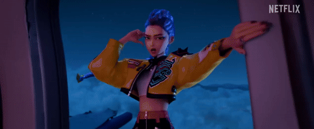

Produccion
Desarrollo
|
En marzo de 2021, se anunció que Sony Pictures Animation estaba desarrollando una película con el título provisorio de K-Pop: Demon Hunters. Maggie Kang y Chris Appelhans serían los directores, Hannah McMechan y Danya Jimenez escribirían el guion, y Aron Warner y Michelle LM Wong se desempeñarían como productores. Helen Chen y Ami Thompson también fueron anunciadas como diseñadoras de producción y directoras de arte, respectivamente. La idea del proyecto fue concebida por Kang, quien quería hacer una película "ambientada en la cultura coreana"; ella "se adentró en la mitología y la demonología para algo que pudiera ser visualmente único" en comparación con los "medios convencionales".También llamó a la película su "carta de amor al K-Pop" y sus "raíces coreanas". En cuanto al diseño de personajes, Kang destacó su deseo de diferenciarse de las "superhéroes femeninas de Marvel que eran simplemente sexis, geniales y rudas" y, en cambio, tener "chicas que tenían barrigas, eructaban, eran groseras, tontas y divertidas", lo que llevó a la creación de "algo que abarcara todos esos elementos". También le influyó "la forma en que Bong Joon Ho combina tantos tonos diferentes en sus películas hasta hacerlas parecer muy animadas".Appelhans se unió al proyecto más tarde, después de que Kang le contara sus ideas iniciales para la película; planeaba tomarse un largo descanso después de haber dirigido Wish Dragon (2021). Afirmó que |
 |
Animacion
La película fue animada por Sony Pictures Imageworks, con Josh Beveridge como jefe de animación de personajes Appelhans destacó que la inspiración provino de "videos musicales, fotografía editorial, K-dramas, iluminación de conciertos y un toque de anime". Kang explicó que, tras ver las películas Spider-Verse de Sony, que presentan un "estilo híbrido 2D-3D", decidieron "alejarse de cada elemento 2D en nuestra película" y, en su lugar, "tomaron mucha inspiración de los rostros y la apariencia del anime" con el objetivo de crear "una versión CG de ello".
Beveridge también resaltó la influencia de la "estética 2D pero con lenguaje tridimensional" y mencionó que querían que la película tuviera un "aspecto gráfico muy audaz". Además, destacó cómo cambiaron los rostros de los personajes para reflejar el tono de la película, como en los "momentos de alto glamour", donde "necesitan sentirse como estrellas del pop en un mundo animado", o en los de "agresividad animada", que tienen "rostros con mucho más trabajo de línea, mucha más angularidad". También mencionó momentos "hiperridículos", que se refirió como "Chibi o demi-Chibi", con "rasgos súper lindos y exagerados".